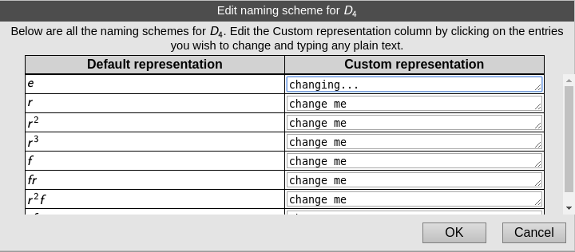

The Group Info page is the presentation to the user of all information Group Explorer has about a given group.
It consists of several sections, each with a heading and a body. On first visiting the page most of the bodies are hidden, as indicated by a ‘▶’ sign to the left of the heading. Clicking the ‘▶’ sign expands the body, and changes the ‘▶’ sign to a ‘▼’. Clicking the ‘▼’ sign hides the body again. You can also hide/expose all the section together by clicking on the ‘v’ and ‘^’ icons in the upper right-hand corner of the page.
Let us consider each section that appears in a Group Info page separately. It may help you to open an example group info page now and read it alongside this help page.
The section presents basic facts about a group such as its definition, order, and any other names it has besides its primary name (which is the title of each Group Info page). Some (but not all) groups contain notes with a description of the group, which appears in this section.
Group Explorer is all about visualization, and thus the Views section receives high priority. To the right of the heading a row of small thumbnails shows a sample of the various ways to visualize the group. Expanding this section by clicking the ‘▶’ sign to the left of the heading exposes larger previews of every way to visualize the group, including all the Cayley diagrams, a multiplication table, a cycle graph, and any objects of symmetry the group has.
Group Explorer computes information about each group it loads. For example, it computes all of its subgroups, which ones are normal, information about conjugacy classes, and more. A summary of this information is shown to the right of each subheading in this section, but much more information is available than it may seem from the summaries. Users are encouraged to expand the bodies by clicking on the ‘▶’ sign to the left of each subheading to find out reasons for the computations, and often many additional helpful illustrations and computations.
Groups can be generated in many ways and some groups come with a few different commonly-used sets of generators chosen. If the group has no pre-selected set of generators built in, Group Explorer computes one such (minimum-size) set when the group is loaded. Each list of generators is given in this section.
CITE(VGT-1.4 VGT-2.3)
The structure of a group is independent of whatever symbols we use to represent the elements of the group. For this reason, a group may come with several different lists of names for its elements, and the user may choose any one of them to be used as the primary way of representing the elements of the group. This section lets the user make such a selection and also create new naming schemes.
This section also lets users remove or edit any of their previously-defined naming schemes; this information is stored in the user’s web browser so that it will be preserved even when they leave the site.
The section contains a link that reads “Click here to add a new representation for this group” and possibly also links that read “Click here to edit this representation.” (Note that “naming scheme” and “representation” are interchangeable terms.) In both cases, if you click the link, an interface like the following one appears, allowing you to custom-define a naming scheme for the elements of the group.

The left column lists the default element names, the center column shows the current naming as it will be rendered elsewhere, and the right column contains a text area in which you can enter your own representation. The text area will display your entry as plain text, but elsewhere it will be displayed as HTML, so if you would like the permutation (0 1 2) to be shown as r-1 in a Cayley diagram, enter “<i>r</i><sup>-1</sup>” into the text area, as shown in the illustration above. You can preview the HTML by clicking “Display changes as they would appear, without saving them.”, and they will appear formatted in HTML in the center column. When you are done, if you choose “Save changes and close editor.”, your changes will be committed and you will have defined a new representation (or changed an old representation) of the elements of the group.
A few notes about entering HTML in the text area:
You may use any Unicode character you like, as well as HTML entities like ℤ or ℤ.
HTML can be more verbose than plain text, so on platforms that support it you can extend the text area by dragging the right-hand edge (as shown above in the representation for (0 1)).
Names can be blank, and they don’t have to be unique. (In practice, this just means you can save partially completed work that has blanks or duplications that you intend to correct later.)
While Group Explorer can generally makes sense of the HTML you enter, some results may be unexpected. You can style the HTML using a construct like <i style=”color: red”>r</i>, but the style may not work in all the visualizers. And multi-line names (those containg <br> or <hr> elements, for example), don’t always display as desired. Try it out to make sure!
Links in the group info window to edit representations are present only for representations that the user has created. Naming schemes built into the group in Group Explorer are uneditable by the end user.
Users can add their own personal notes to a group to supplement the default information in any way they see fit. Such information appears in this section, with controls for editing it. Notes will be displayed as HTML, as with user-defined naming schemes, and stored in the user’s browser.
This section presents information about the group definition, as opposed to mathematical information about the group itself. It includes such items as URL from which the group definition was downloaded, and its author.